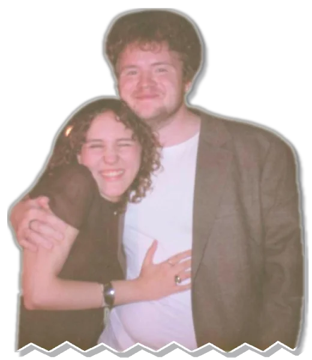
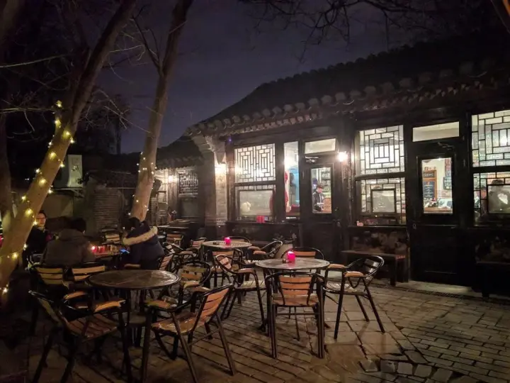
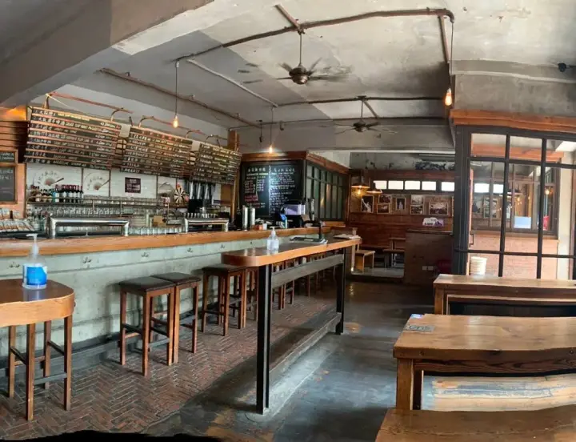
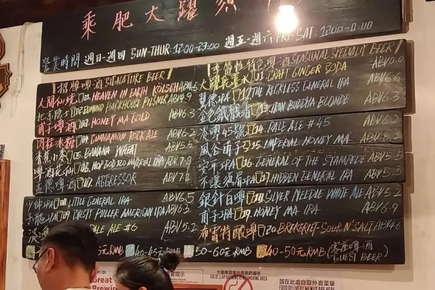
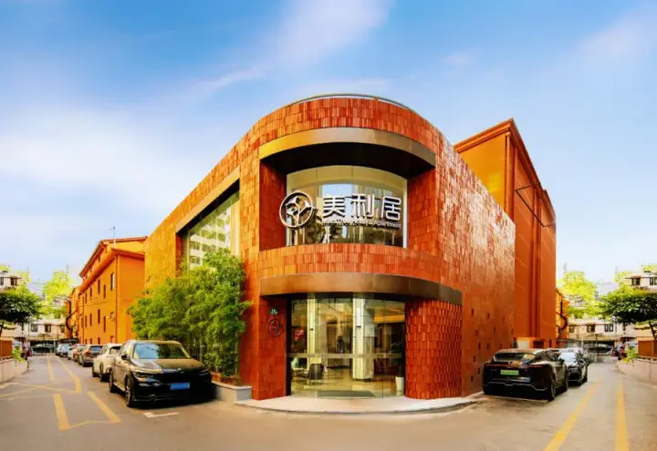
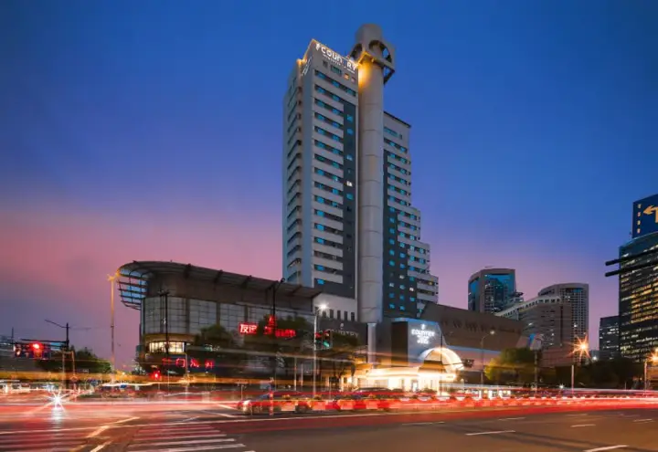
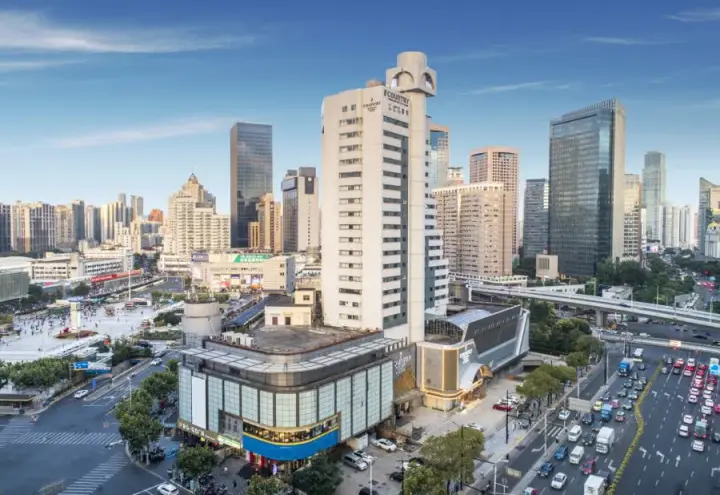
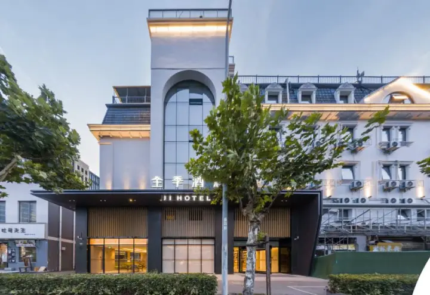

Билет 01 · 16–20 дек
Пекин
4НОЧИ · 1 В САМОЛЁТЕ
- Ледовые велосипеды на Houhai на закате
- Universal: Хогвартс в рождественских огнях
- Запретный город и закат с Jingshan
- Храм Ламы и 798
- Хутуны, крафт, утка
🥶 −5…+3° · сухо и ясно
до вылета в Пекин, 16 декабря вечером








Как считал: курсы 1 ¥ ≈ 11,5 ₽, 1 $ ≈ 83 ₽. Отели из подборок выше, за двоих с налогами, цены Trip.com на наши даты от 5 ноября 2026. Перелёты по агрегаторам на зиму, вилка «купить сейчас / купить в декабре». Еда по вилке «стритфуд и лапша» / «рестораны и бары каждый вечер». Нижняя граница — экономно, верхняя — ни в чём себе не отказывая.
Считаем по верхней границе, обычно уходит столько. С каждой зарплаты свободно 150, на жизнь в Москве около 60 за две недели, в декабре меньше: половину месяца мы в Китае. Суммы на двоих, в тысячах рублей. Перелёты Москва — Китай уже куплены
Не хватает около 150 тысяч: берём из подушки в декабре и возвращаем с январских зарплат. Или режем: шопинг до −70, отель в Шанхае до 20 −10, еда и такси попроще −30–45. Отель в Шэньчжэне берём с предоплатой: так дешевле, чем с оплатой в отеле, и может сработать скидка Flyer Exclusive для тех, кто летел с Trip.com. Если она разовая, Пекин бронируем раньше и без неё. Отели в Шанхае и Санье бронируем на Trip.com с оплатой в отеле: номер держится, платим при заселении. Universal берём 10 декабря, за неделю до похода. Зарплата 25 декабря придёт, когда мы в Китае: карту, привязанную к Alipay, проверить на пополнение из-за границы до вылета